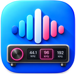
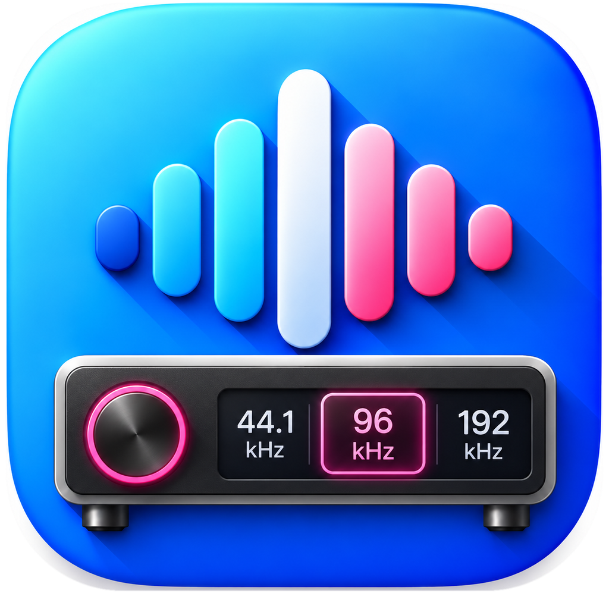

Background awareness
Inspect active audio processes and the default output device without recording audio.

SamplePilotSee your Mac’s output format. Match supported sample rates with clear control over what changes.
SamplePilot lives in the menu bar and checks audio activity in the background.
Explore how it works
Inspect active audio processes and the default output device without recording audio.
Check supported sample rates, confirm the actual device format and attempt a restore if a change fails.
Use optional Apple Music metadata, a selected audio file, or a manual output rate for playback in other apps.
Automatic track-format detection currently uses Apple Music metadata. Detecting an audio process does not reveal its track’s original sample rate or bit depth. Universal automatic detection for Spotify, browsers and other players is not implemented. Reference modes work with any player using the default macOS output, but do not follow track changes.
Streaming metadata is unverified and requires an explicit opt-in for automatic switching. DAC output depth and original source depth are shown separately. Bit-perfect playback is not guaranteed.
Download the app for free and start the 14-day Trial in SamplePilot. Automatic switching, manual output controls and write diagnostics are included for 14 full days from activation.
After the trial, audio activity, output routes, formats and read-only diagnostics remain available. A separate one-time in-app purchase permanently unlocks audio changes. The current price is shown in the app before purchase.
No subscription. No automatic charge when the trial ends. Restore Purchases is available in the app.
Developed by Edzart Sinning. SamplePilot contains no advertising, analytics or audio recording. Device and source information stays on your Mac unless you choose to share it with support.
Datenschutzerklärung lesen